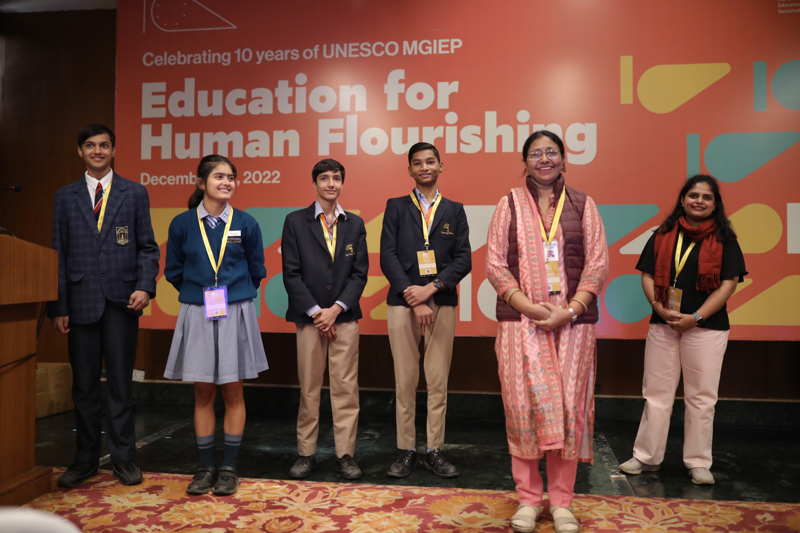
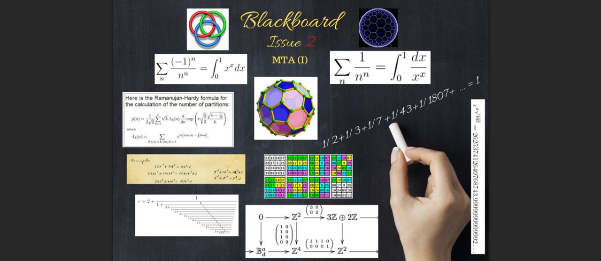
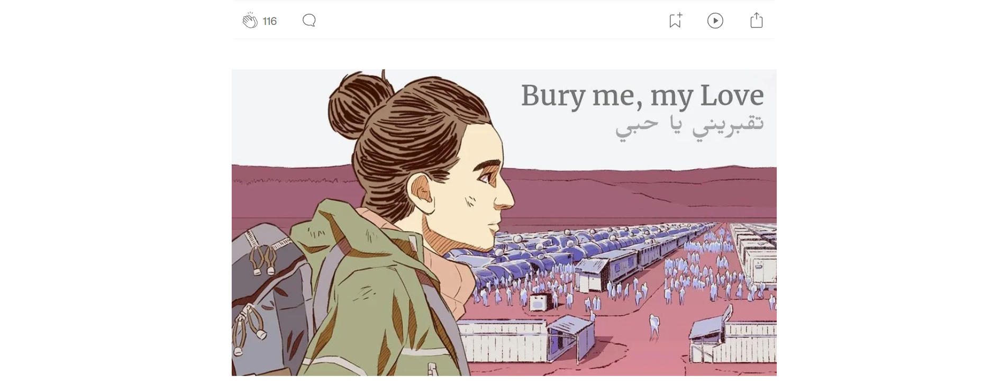
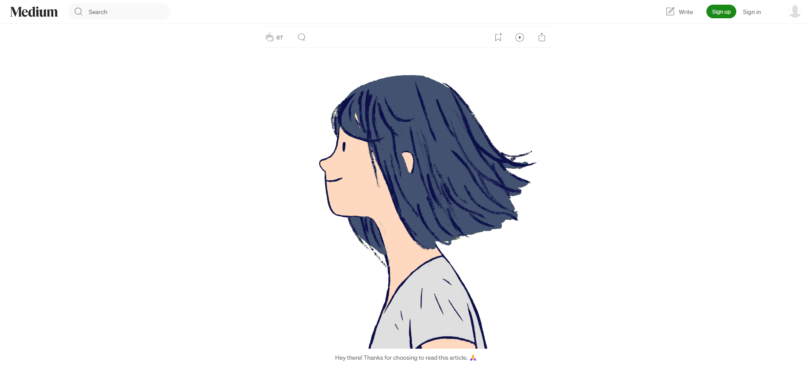

Activities
Recent updates.
2026

Talk: Designing Math Games for Children with Dyscalculia
At the Asia Africa Regional Conference on Specific Learning Disabilities organized by the Maharashtra Dyslexia Association on 18th Apr, 2026.

Podcast: My Experiences in Game-based Learning
Hosted by Desi Academia Podcast. Released on 8th Apr, 2026.

Workshop: Designing Purposeful Math Games
For 100 pre-service teachers at the Cluster Innovation Centre, University of Delhi on Apr 8, 2026.

Talk: Mining Insights from an Assessment Task
At the The Fields Institute for Research in Mathematical Sciences on Mar 28, 2026.

Blog: What is mathematical play and how to design it
For Vretta Buzz on Jan 9, 2026.
2025

Blog: What is APOS theory?
For Vretta Buzz on Oct 28, 2025.

Blog: How to create theory-driven math games?
For Vretta Buzz on Sep 16, 2025.

Blog: An overview of research on learning games
For Learning Designers Community (LDC) on Aug 29, 2025.

Talk: Serious Games Arcade
Hosted by Concordia University on Jun 6, 2025.

Report: Discovery Tour Curriculum Guides project covered in Academia-Industry Case Studies 2025
Published by WikiT on May 27, 2025.
2022

Feature: Discovery Tour Curriculum Guides project covered by Dr. Matthew Farber
Published in Edutopia on Dec 12, 2022.

Feature: Discovery Tour Curriculum Guides project covered by Study International
Published by Study International on Aug 30, 2022.

News: TLC Lab Discovery Tour collaboration with Ubisoft
Covered by Mobile Syrup on June 15, 2022.

Feature: Discovery Tour Curriculum Guides project covered by McGill University
Published by McGill Faculty of Education on Feb 7, 2022.

Workshop: For Teachers and Students on the use of Learning Games
Designed and facilitated with UNESCO MGIEP on Dec 7, 2022.
2019

Article: in Blackboard, the Bulletin of the Mathematics Teachers’ Association (MTA)
Issue 2 published by MTA in 2019.

Feature: My Recommendation in the Curated List of Educational Games
Published by Literary Safari in 2019.

Blog: How we created a game-based course on Migration and Refugees
For UNESCO MGIEP on Oct 29, 2019.

Blog: How we created a game-based course on Gender and Society
For UNESCO MGIEP on May 29, 2019.

The First Gaming Curriculum Guide for UNESCO
With UNESCO MGIEP in 2019.

Workshops: Four Workshops for Teachers and Students on Co-Creating Learning Environments
Designed and facilitated with UNESCO MGIEP in June 2019.

Workshops: A Five-Day Games Bar at the 40th UNESCO General Conference
Designed and facilitated with UNESCO MGIEP and UNESCO HQ in Nov 2019.
Panel: "Gamestorming Curricula" discussing the Creation of Game-Based Courses
Delivered at the TECH Conference by UNESCO MGIEP in 2019 in Vizag.